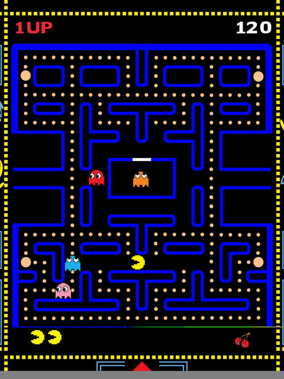

PAC-MAN

Pac-Man (conhecido em japonês com o nome de Puckman ou パックマン) é um jogo eletrônico criado por Tōru Iwatani para a empresa Namco, e sendo distribuído para o mercado americano pela Midway Games.
Conheça os personagens
BLINKY
INKY
PINKY
CLYDE